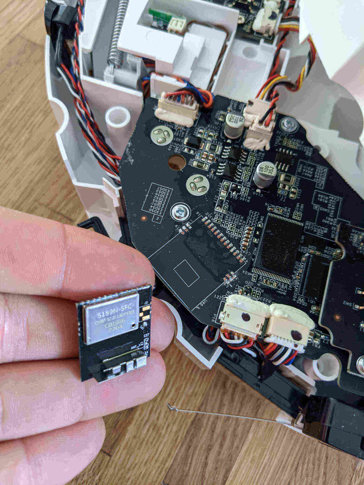

Von meinem Staubsaugerroboter bin ich eigentlich total begeistert. Ich verwende ihn folgendermaßen: Zuerst räume ich alles weg, was potenziell im Weg sein könnte. Danach drücke ich die Starttaste, und er erledigt seine Arbeit. Wenn er fertig ist, kehrt er automatisch zur Ladestation zurück. Dann leere ich irgendwann den Staubbehälter und er ist bereit für seinen nächsten Einsatz.
Ich benötige keine App, sondern möchte gezielt eine Taste drücken, wenn ich denke, dass gesaugt werden muss. Außerdem möchte ich dem Roboter keinen Zugang zu meinem Netzwerk geben. Selbst wenn ich über meinen Router den Internetzugang für den Roboter blockieren kann, könnte er möglicherweise über die Smartphone-App dennoch eine Verbindung zum Internet herstellen. Bei einigen Modellen kann man wahrscheinlich den Internetzugang der App über eine Firewall blockieren, da die App nicht unbedingt ins Internet muss. Bei anderen wird selbst das nicht funktionieren, da die App zwingend eine Internetverbindung braucht. Hier noch ein kleiner Reminder, was passiert, wenn man einem Unternehmen (dem damaligen Marktführer) seine Daten überlässt und sich keine Sorgen um die Sicherheit macht: "robot films person on toilet and data ends on facebook"
Für mich war jedenfalls von Beginn an klar, dass ich den Roboter nicht in mein Heimnetz lasse. Wo liegt dann das Problem? Es gibt zwei Probleme: Erstens hat der Roboter einen Lautsprecher, der mich alle 6-8 Stunden lauthals daran erinnert, dass ich ihn noch nicht mit dem Netzwerk verbunden habe ("the robot is in setup mode, please connect it to your network..."). Das ist ziemlich nervig, besonders wenn es mitten in der Nacht passiert. Zweitens könnte sich jeder in Reichweite des Roboters damit verbinden und seine eigene Firmware flashen, solange er sich im Einrichtungsmodus befindet. Das ist nicht gerade ideal.
Diese beiden Probleme könnten durch das Flashen einer Open-Source-Firmware wie Valetudo gelöst werden. Da ich jedoch die Funktionen von Valetudo nicht benötige, sondern einfach den Startknopf drücken möchte, ist das für mich keine Option. Ich bin ja wie gesagt sehr zufrieden mit der manuellen Bedienung meines Roboters. Also habe ich den Hardwareansatz gewählt und einen kleinen Schalter an das Lautsprecherkabel gelötet, der von außen bedient werden kann. Wenn ich also denke, dass der Roboter mir etwas Wichtiges mitteilen muss, kann ich den Schalter einschalten. In allen anderen Fällen ist er jetzt stumm. Um das offene WLAN zu beseitigen, habe ich kurzerhand das WLAN-Modul ausgelötet. Ich kann es später wieder anlöten, wenn ich jemals beschließe, dass ich es doch brauchen sollte.
